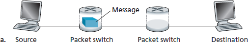
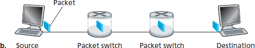

家庭作业问题和疑问#
Homework Problems and Questions
Chapter 1 Review Questions#
- SECTION 1.1
R1. What is the difference between a host and an end system? List several different types of end systems. Is a Web server an end system?
R2. The word protocol is often used to describe diplomatic relations. How does Wikipedia describe diplomatic protocol?
R3. Why are standards important for protocols?
- SECTION 1.2
R4. List six access technologies. Classify each one as home access, enterprise access, or wide-area wireless access.
R5. Is HFC transmission rate dedicated or shared among users? Are collisions possible in adownstream HFC channel? Why or why not?
R6. List the available residential access technologies in your city. For each type of access,provide the advertised downstream rate, upstream rate, and monthly price.
R7. What is the transmission rate of Ethernet LANs?
R8. What are some of the physical media that Ethernet can run over?
R9. Dial-up modems, HFC, DSL and FTTH are all used for residential access. For each of theseaccess technologies, provide a range of transmission rates and comment on whether thetransmission rate is shared or dedicated.
R10. Describe the most popular wireless Internet access technologies today. Compare andcontrast them.
- SECTION 1.3
R11. Suppose there is exactly one packet switch between a sending host and a receiving host. The transmission rates between the sending host and the switch and between the switch and the receiving host are R1 and R2, respectively. Assuming that the switch uses store-and-forward packet switching, what is the total end-to-end delay to send a packet of length L? (Ignore queuing, propagation delay, and processing delay.)
R12. What advantage does a circuit-switched network have over a packet-switched network? What advantages does TDM have over FDM in a circuit-switched network?
R13. Suppose users share a 2 Mbps link. Also suppose each user transmits continuously at 1 Mbps when transmitting, but each user transmits only 20 percent of the time. (See the discussion of statistical multiplexing in Section 1.3 .)
When circuit switching is used, how many users can be supported?
For the remainder of this problem, suppose packet switching is used. Why will there be essentially no queuing delay before the link if two or fewer users transmit at the same time? Why will there be a queuing delay if three users transmit at the same time?
Find the probability that a given user is transmitting.
Suppose now there are three users. Find the probability that at any given time, all three users are transmitting simultaneously. Find the fraction of time during which the queue grows.
R14. Why will two ISPs at the same level of the hierarchy often peer with each other? How does an IXP earn money?
R15. Some content providers have created their own networks. Describe Google’s network. What motivates content providers to create these networks?
- SECTION 1.4
R16. Consider sending a packet from a source host to a destination host over a fixed route. List the delay components in the end-to-end delay. Which of these delays are constant and which are variable?
R17. Visit the Transmission Versus Propagation Delay applet at the companion Web site. Among the rates, propagation delay, and packet sizes available, find a combination for which the sender finishes transmitting before the first bit of the packet reaches the receiver. Find another combination for which the first bit of the packet reaches the receiver before the sender finishes transmitting.
R18. How long does it take a packet of length 1,000 bytes to propagate over a link of distance 2,500 km, propagation speed 2.5⋅108 m/s, and transmission rate 2 Mbps? More generally, how long does it take a packet of length L to propagate over a link of distance d, propagation speed s, and transmission rate R bps? Does this delay depend on packet length? Does this delay depend on transmission rate?
R19. Suppose Host A wants to send a large file to Host B. The path from Host A to Host B has three links, of rates R1=500 kbps, R2=2 Mbps, and R3=1 Mbps.
Assuming no other traffic in the network, what is the throughput for the file transfer?
Suppose the file is 4 million bytes. Dividing the file size by the throughput, roughly how long will it take to transfer the file to Host B?
Repeat (a) and (b), but now with R2 reduced to 100 kbps.
R20. Suppose end system A wants to send a large file to end system B. At a very high level, describe how end system A creates packets from the file. When one of these packets arrives to a router, what information in the packet does the router use to determine the link onto which the packet is forwarded? Why is packet switching in the Internet analogous to driving from one city to another and asking directions along the way?
R21. Visit the Queuing and Loss applet at the companion Web site. What is the maximum emission rate and the minimum transmission rate? With those rates, what is the traffic intensity? Run the applet with these rates and determine how long it takes for packet loss to occur. Then repeat the experiment a second time and determine again how long it takes for packet loss to occur. Are the values different? Why or why not?
- SECTION 1.5
R22. List five tasks that a layer can perform. Is it possible that one (or more) of these tasks could be performed by two (or more) layers?
R23. What are the five layers in the Internet protocol stack? What are the principal responsibilities of each of these layers?
R24. What is an application-layer message? A transport-layer segment? A network-layer datagram? A link-layer frame?
R25. Which layers in the Internet protocol stack does a router process? Which layers does a link-layer switch process? Which layers does a host process?
- SECTION 1.6
R26. What is the difference between a virus and a worm?
R27. Describe how a botnet can be created and how it can be used for a DDoS attack.
R28. Suppose Alice and Bob are sending packets to each other over a computer network. Suppose Trudy positions herself in the network so that she can capture all the packets sent by Alice and send whatever she wants to Bob; she can also capture all the packets sent by Bob and send whatever she wants to Alice. List some of the malicious things Trudy can do from this position.
- Problems
P1. Design and describe an application-level protocol to be used between an automatic teller machine and a bank’s centralized computer. Your protocol should allow a user’s card and password to be verified, the account balance (which is maintained at the centralized computer) to be queried, and an account withdrawal to be made (that is, money disbursed to the user). Your protocol entities should be able to handle the all-too-common case in which there is not enough money in the account to cover the withdrawal. Specify your protocol by listing the messages exchanged and the action taken by the automatic teller machine or the bank’s centralized computer on transmission and receipt of messages. Sketch the operation of your protocol for the case of a simple withdrawal with no errors, using a diagram similar to that in Figure 1.2 . Explicitly state the assumptions made by your protocol about the underlying end-to- end transport service.
P2. Equation 1.1 gives a formula for the end-to-end delay of sending one packet of length L over N links of transmission rate R. Generalize this formula for sending P such packets back-to- back over the N links.
P3. Consider an application that transmits data at a steady rate (for example, the sender generates an N-bit unit of data every k time units, where k is small and fixed). Also, when such an application starts, it will continue running for a relatively long period of time. Answer the following questions, briefly justifying your answer:
Would a packet-switched network or a circuit-switched network be more appropriate for this application? Why?
Suppose that a packet-switched network is used and the only traffic in this network comes from such applications as described above. Furthermore, assume that the sum of the application data rates is less than the capacities of each and every link. Is some form of congestion control needed? Why?
P4. Consider the circuit-switched network in Figure 1.13 . Recall that there are 4 circuits on each link. Label the four switches A, B, C, and D, going in the clockwise direction.
What is the maximum number of simultaneous connections that can be in progress at any one time in this network?
Suppose that all connections are between switches A and C. What is the maximum number of simultaneous connections that can be in progress?
Suppose we want to make four connections between switches A and C, and another four connections between switches B and D. Can we route these calls through the four links to accommodate all eight connections?
P5. Review the car-caravan analogy in Section 1.4 . Assume a propagation speed of 100 km/hour.
Suppose the caravan travels 150 km, beginning in front of one tollbooth, passing through a second tollbooth, and finishing just after a third tollbooth. What is the end-to-end delay?
Repeat (a), now assuming that there are eight cars in the caravan instead of ten.
P6. This elementary problem begins to explore propagation delay and transmission delay, two central concepts in data networking. Consider two hosts, A and B, connected by a single link of rate R bps. Suppose that the two hosts are separated by m meters, and suppose thepropagation speed along the link is s meters/sec. Host A is to send a packet of size L bits to Host B.

Exploring propagation delay and transmission delay
Express the propagation delay, \(d_{prop}\), in terms of m and s.
Determine the transmission time of the packet, \(d_{trans}\), in terms of L and R.
Ignoring processing and queuing delays, obtain an expression for the end-to-end delay.
Suppose Host A begins to transmit the packet at time t=0. At time t= \(d_{trans}\), where is the last bit of the packet?
Suppose \(d_{prop}\) is greater than \(d_{trans}\). At time t=dtrans, where is the first bit of the packet?
Suppose \(d_{prop}\) is less than \(d_{trans}\). At time t=dtrans, where is the first bit of the packet?
Suppose s=2.5⋅108, L=120 bits, and R=56 kbps. Find the distance m so that \(d_{prop}\) equals \(d_{trans}\).
P7. In this problem, we consider sending real-time voice from Host A to Host B over a packet- switched network (VoIP). Host A converts analog voice to a digital 64 kbps bit stream on the fly. Host A then groups the bits into 56-byte packets. There is one link between Hosts A and B; its transmission rate is 2 Mbps and its propagation delay is 10 msec. As soon as Host A gathers a packet, it sends it to Host B. As soon as Host B receives an entire packet, it converts the packet’s bits to an analog signal. How much time elapses from the time a bit is created (from the original analog signal at Host A) until the bit is decoded (as part of the analog signal at Host B)?
P8. Suppose users share a 3 Mbps link. Also suppose each user requires 150 kbps when transmitting, but each user transmits only 10 percent of the time. (See the discussion of packet switching versus circuit switching in Section 1.3 .)
When circuit switching is used, how many users can be supported?
b. For the remainder of this problem, suppose packet switching is used. Find the probability that a given user is transmitting. c. Suppose there are 120 users. Find the probability that at any given time, exactly n users are transmitting simultaneously. (Hint: Use the binomial distribution.) d. Find the probability that there are 21 or more users transmitting simultaneously.
P9. Consider the discussion in Section 1.3 of packet switching versus circuit switching in which an example is provided with a 1 Mbps link. Users are generating data at a rate of 100 kbps when busy, but are busy generating data only with probability p=0.1. Suppose that the 1 Mbps link is replaced by a 1 Gbps link.
What is N, the maximum number of users that can be supported simultaneously under circuit switching?
Now consider packet switching and a user population of M users. Give a formula (in terms of p, M, N) for the probability that more than N users are sending data.
P10. Consider a packet of length L that begins at end system A and travels over three links to a destination end system. These three links are connected by two packet switches. Let di, si, and Ri denote the length, propagation speed, and the transmission rate of link i, for i=1,2,3. The packet switch delays each packet by dproc. Assuming no queuing delays, in terms of di, si, Ri, (i=1,2,3), and L, what is the total end-to-end delay for the packet? Suppose now the packet is 1,500 bytes, the propagation speed on all three links is 2.5⋅108m/s, the transmission rates of all three links are 2 Mbps, the packet switch processing delay is 3 msec, the length of the first link is 5,000 km, the length of the second link is 4,000 km, and the length of the last link is 1,000 km. For these values, what is the end-to-end delay?
P11. In the above problem, suppose R1=R2=R3=R and dproc=0. Further suppose the packet switch does not store-and-forward packets but instead immediately transmits each bit it receives before waiting for the entire packet to arrive. What is the end-to-end delay?
P12. A packet switch receives a packet and determines the outbound link to which the packet should be forwarded. When the packet arrives, one other packet is halfway done being transmitted on this outbound link and four other packets are waiting to be transmitted. Packets are transmitted in order of arrival. Suppose all packets are 1,500 bytes and the link rate is 2 Mbps. What is the queuing delay for the packet? More generally, what is the queuing delay when all packets have length L, the transmission rate is R, x bits of the currently-being-transmitted packet have been transmitted, and n packets are already in the queue?
P13.
Suppose N packets arrive simultaneously to a link at which no packets are currently being transmitted or queued. Each packet is of length L and the link has transmission rate R. What is the average queuing delay for the N packets?
Now suppose that N such packets arrive to the link every LN/R seconds. What is the average queuing delay of a packet?
P14. Consider the queuing delay in a router buffer. Let I denote traffic intensity; that is, I=La/R. Suppose that the queuing delay takes the form IL/R(1−I) for I<1.
Provide a formula for the total delay, that is, the queuing delay plus the transmission delay.
Plot the total delay as a function of L /R.
P15. Let a denote the rate of packets arriving at a link in packets/sec, and let µ denote the link’s transmission rate in packets/sec. Based on the formula for the total delay (i.e., the queuing delay plus the transmission delay) derived in the previous problem, derive a formula for the total delay in terms of a and µ.
P16. Consider a router buffer preceding an outbound link. In this problem, you will use Little’s formula, a famous formula from queuing theory. Let N denote the average number of packets in the buffer plus the packet being transmitted. Let a denote the rate of packets arriving at the link. Let d denote the average total delay (i.e., the queuing delay plus the transmission delay) experienced by a packet. Little’s formula is N=a⋅d. Suppose that on average, the buffer contains 10 packets, and the average packet queuing delay is 10 msec. The link’s transmission rate is 100 packets/sec. Using Little’s formula, what is the average packet arrival rate, assuming there is no packet loss?
P17.
Generalize Equation 1.2 in Section 1.4.3 for heterogeneous processing rates, transmission rates, and propagation delays.
Repeat (a), but now also suppose that there is an average queuing delay of dqueue at each node.
P18. Perform a Traceroute between source and destination on the same continent at three different hours of the day.

Using Traceroute to discover network paths and measure network delay
Find the average and standard deviation of the round-trip delays at each of the three hours.
Find the number of routers in the path at each of the three hours. Did the paths change during any of the hours?
Try to identify the number of ISP networks that the Traceroute packets pass through from source to destination. Routers with similar names and/or similar IP addresses should be considered as part of the same ISP. In your experiments, do the largest delays occur at the peering interfaces between adjacent ISPs?
Repeat the above for a source and destination on different continents. Compare the intra-continent and inter-continent results.
P19.
Visit the site www.traceroute.org and perform traceroutes from two different cities in France to the same destination host in the United States. How many links are the same in the two traceroutes? Is the transatlantic link the same?
Repeat (a) but this time choose one city in France and another city in Germany.
Pick a city in the United States, and perform traceroutes to two hosts, each in a different city in China. How many links are common in the two traceroutes? Do the two traceroutes diverge before reaching China?
P20. Consider the throughput example corresponding to Figure 1.20(b) . Now suppose that there are M client-server pairs rather than 10. Denote \(R_s\), \(R_c\), and R for the rates of the server links, client links, and network link. Assume all other links have abundant capacity and that there is no other traffic in the network besides the traffic generated by the M client-server pairs. Derive a general expression for throughput in terms of \(R_s\), \(R_c\), R, and M.
P21. Consider Figure 1.19(b) . Now suppose that there are M paths between the server and the client. No two paths share any link. Path k(k=1,…,M) consists of N links with transmission rates R1k,R2k,…,RNk. If the server can only use one path to send data to the client, what is the maximum throughput that the server can achieve? If the server can use all M paths to send data, what is the maximum throughput that the server can achieve?
P22. Consider Figure 1.19(b) . Suppose that each link between the server and the client has a packet loss probability p, and the packet loss probabilities for these links are independent. What is the probability that a packet (sent by the server) is successfully received by the receiver? If a packet is lost in the path from the server to the client, then the server will re-transmit the packet. On average, how many times will the server re-transmit the packet in order for the client to successfully receive the packet?
P23. Consider Figure 1.19(a) . Assume that we know the bottleneck link along the path from the server to the client is the first link with rate Rs bits/sec. Suppose we send a pair of packets back to back from the server to the client, and there is no other traffic on this path. Assume each packet of size L bits, and both links have the same propagation delay dprop.
What is the packet inter-arrival time at the destination? That is, how much time elapses from when the last bit of the first packet arrives until the last bit of the second packet arrives?
Now assume that the second link is the bottleneck link (i.e., Rc<Rs). Is it possible that the second packet queues at the input queue of the second link? Explain. Now suppose that the server sends the second packet T seconds after sending the first packet. How large must T be to ensure no queuing before the second link? Explain.
P24. Suppose you would like to urgently deliver 40 terabytes data from Boston to Los Angeles. You have available a 100 Mbps dedicated link for data transfer. Would you prefer to transmit the data via this link or instead use FedEx over-night delivery? Explain.
P25. Suppose two hosts, A and B, are separated by 20,000 kilometers and are connected by a direct link of R=2 Mbps. Suppose the propagation speed over the link is 2.5⋅108 meters/sec.
Calculate the bandwidth-delay product, R⋅dprop.
Consider sending a file of 800,000 bits from Host A to Host B. Suppose the file is sent continuously as one large message. What is the maximum number of bits that will be in the link at any given time?
Provide an interpretation of the bandwidth-delay product.
What is the width (in meters) of a bit in the link? Is it longer than a football field?
Derive a general expression for the width of a bit in terms of the propagation speed s, the transmission rate R, and the length of the link m.
P26. Referring to problem P25, suppose we can modify R. For what value of R is the width of a bit as long as the length of the link?
P27. Consider problem P25 but now with a link of R=1 Gbps.
Calculate the bandwidth-delay product, R⋅dprop.
Consider sending a file of 800,000 bits from Host A to Host B. Suppose the file is sent continuously as one big message. What is the maximum number of bits that will be in the link at any given time?
What is the width (in meters) of a bit in the link?
P28. Refer again to problem P25.
How long does it take to send the file, assuming it is sent continuously?
Suppose now the file is broken up into 20 packets with each packet containing 40,000 bits. Suppose that each packet is acknowledged by the receiver and the transmission time of an acknowledgment packet is negligible. Finally, assume that the sender cannot send a packet until the preceding one is acknowledged. How long does it take to send the file?
Compare the results from (a) and (b).
P29. Suppose there is a 10 Mbps microwave link between a geostationary satellite and its base station on Earth. Every minute the satellite takes a digital photo and sends it to the base station. Assume a propagation speed of 2.4⋅108 meters/sec.
What is the propagation delay of the link?
What is the bandwidth-delay product, R⋅dprop?
Let x denote the size of the photo. What is the minimum value of x for the microwave link to be continuously transmitting?
P30. Consider the airline travel analogy in our discussion of layering in Section 1.5 , and the addition of headers to protocol data units as they flow down the protocol stack. Is there an equivalent notion of header information that is added to passengers and baggage as they move down the airline protocol stack?
P31. In modern packet-switched networks, including the Internet, the source host segments long, application-layer messages (for example, an image or a music file) into smaller packets and sends the packets into the network. The receiver then reassembles the packets back into the original message. We refer to this process as message segmentation. Figure 1.27 illustrates the end-to-end transport of a message with and without message segmentation. Consider a message that is 8⋅106 bits long that is to be sent from source to destination in Figure 1.27 . Suppose each link in the figure is 2 Mbps. Ignore propagation, queuing, and processing delays.
Consider sending the message from source to destination without message segmentation. How long does it take to move the message from the source host to the first packet switch? Keeping in mind that each switch uses store-and-forward packet switching, what is the total time to move the message from source host to destination host?
Now suppose that the message is segmented into 800 packets, with each packet being 10,000 bits long. How long does it take to move the first packet from source host to the first switch? When the first packet is being sent from the first switch to the second switch, the second packet is being sent from the source host to the first switch. At what time will the second packet be fully received at the first switch?
How long does it take to move the file from source host to destination host when message segmentation is used? Compare this result with your answer in part (a) and comment.


Figure 1.27 End-to-end message transport: (a) without message segmentation; (b) with message segmentation
In addition to reducing delay, what are reasons to use message segmentation?
Discuss the drawbacks of message segmentation.
P32. Experiment with the Message Segmentation applet at the book’s Web site. Do the delays in the applet correspond to the delays in the previous problem? How do link propagation delays affect the overall end-to-end delay for packet switching (with message segmentation) and for message switching?
P33. Consider sending a large file of F bits from Host A to Host B. There are three links (and two switches) between A and B, and the links are uncongested (that is, no queuing delays). Host Asegments the file into segments of S bits each and adds 80 bits of header to each segment, forming packets of L=80 + S bits. Each link has a transmission rate of R bps. Find the value of S that minimizes the delay of moving the file from Host A to Host B. Disregard propagation delay. P34. Skype offers a service that allows you to make a phone call from a PC to an ordinary phone. This means that the voice call must pass through both the Internet and through a telephone network. Discuss how this might be done.